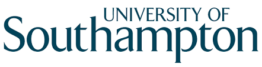
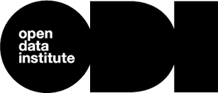
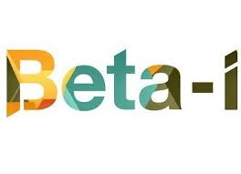
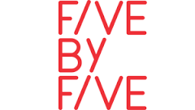

Core Partners

The
University of Southampton is ranked in the top ten research-led universities in the UK. It participates in a number of collaborative research projects and its Electronics and Computer Science (ECS) school plays a leading role in development of Web Science and linked and open data.

The
Open Data Institute connects, equips and inspires people around the world to innovate with data. It is independent, nonprofit and nonpartisan, and was founded in 2012 by Sir Tim Berners-Lee and Sir Nigel Shadbolt.
 Telecom Italia is Italy’s leading telecommunications and IT group. It has a history of focusing on innovation and over the next three years the group will be investing €3.4bn on the development of new generation technologies.
Telecom Italia is Italy’s leading telecommunications and IT group. It has a history of focusing on innovation and over the next three years the group will be investing €3.4bn on the development of new generation technologies.

Beta-i is a non-profit association created in 2010, with the mission to improve entrepreneurship through 3 main acting principles: create and boost a network of entrepreneurship, accelerate startups with global ambition and facilitate their access to investment, create space, services and products focused on startups.
Thirs parties
 Waag Society is a pioneer in the field of digital media. Over the past 20 years, the foundation has developed into an institution of international stature, a platform for artistic research and experimentation, and has become both a catalyst for events and a breeding ground for cultural and social innovation.
Waag Society is a pioneer in the field of digital media. Over the past 20 years, the foundation has developed into an institution of international stature, a platform for artistic research and experimentation, and has become both a catalyst for events and a breeding ground for cultural and social innovation.

Five by Five is an innovation consultancy based in Paris. It helps established organizations find value in opening their data, develop new business models and use the startup ecosystem to drive open innovation.